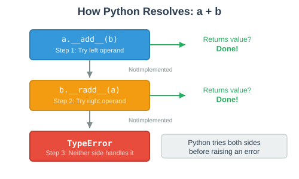
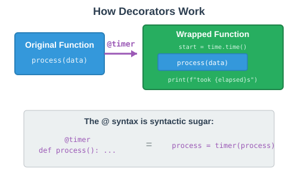
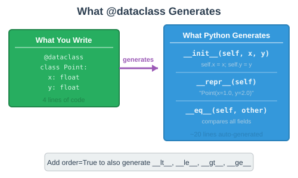

class Vector2D:
"""A 2D vector with x and y components."""
def __init__(self, x, y):
self.x = x
self.y = y
def __repr__(self):
return f"Vector2D({self.x}, {self.y})"By the end of this session, you’ll be able to:
Implement arithmetic and indexing operators on custom classes
Understand reflected operators and how Python dispatches operations
Write and use decorators, including @property, @classmethod, and @staticmethod
Use the @dataclass decorator to eliminate boilerplate code
Combine all three concepts to build clean, Pythonic classes
In OOP 3, we implemented:
__add__ — the + operator
__eq__ — the == operator
__lt__ — the < operator (enables sorted())
Today we’ll add:
__sub__, __mul__ — arithmetic operators
__rmul__ — reflected operators
__getitem__ — indexing with []
@total_ordering — auto-generate comparison methods
class Vector2D:
"""A 2D vector with x and y components."""
def __init__(self, x, y):
self.x = x
self.y = y
def __repr__(self):
return f"Vector2D({self.x}, {self.y})"v1 = Vector2D(3, 4)
v2 = Vector2D(1, 2)
print(v1)Vector2D(3, 4)class Vector2D:
def __init__(self, x, y):
self.x = x
self.y = y
def __add__(self, other):
if not isinstance(other, Vector2D):
return NotImplemented
return Vector2D(self.x + other.x, self.y + other.y)
def __sub__(self, other):
if not isinstance(other, Vector2D):
return NotImplemented
return Vector2D(self.x - other.x, self.y - other.y)v1 = Vector2D(3, 4)
v2 = Vector2D(1, 2)
print(v1 + v2) # Vector2D(4, 6)
print(v1 - v2) # Vector2D(2, 2)__mul__class Vector2D:
def __init__(self, x, y):
self.x = x
self.y = y
def __mul__(self, scalar):
if not isinstance(scalar, (int, float)):
return NotImplemented
return Vector2D(self.x * scalar, self.y * scalar)v = Vector2D(3, 4)
print(v * 2) # Vector2D(6, 8)
print(v * 0.5) # Vector2D(1.5, 2.0)print(2 * v) # ???TypeError: unsupported operand type(s) for *: 'int' and 'Vector2D'
__rmul__class Vector2D:
def __init__(self, x, y):
self.x = x
self.y = y
def __mul__(self, scalar):
if not isinstance(scalar, (int, float)):
return NotImplemented
return Vector2D(self.x * scalar, self.y * scalar)
def __rmul__(self, scalar):
return self.__mul__(scalar)v = Vector2D(3, 4)
print(v * 2) # Vector2D(6, 8) — calls v.__mul__(2)
print(2 * v) # Vector2D(6, 8) — calls v.__rmul__(2)Now both directions work!

__getitem__class Vector2D:
def __init__(self, x, y):
self.x = x
self.y = y
def __getitem__(self, index):
if index == 0:
return self.x
elif index == 1:
return self.y
else:
raise IndexError("Vector2D only has 2 components")v = Vector2D(3, 4)
print(v[0]) # 3
print(v[1]) # 4
print(v[2]) # IndexError: Vector2D only has 2 componentsclass Vector2D:
def __init__(self, x, y):
self.x = x
self.y = y
def __abs__(self):
"""Magnitude (length) of the vector."""
return (self.x ** 2 + self.y ** 2) ** 0.5
def __neg__(self):
"""Negate the vector."""
return Vector2D(-self.x, -self.y)
def __bool__(self):
"""A zero vector is falsy, all others truthy."""
return self.x != 0 or self.y != 0v = Vector2D(3, 4)
print(abs(v)) # 5.0 (the 3-4-5 right triangle!)
print(-v) # Vector2D(-3, -4)
print(bool(v)) # TrueImplementing all six comparison operators manually:
def __eq__(self, other): ... # ==
def __ne__(self, other): ... # !=
def __lt__(self, other): ... # <
def __le__(self, other): ... # <=
def __gt__(self, other): ... # >
def __ge__(self, other): ... # >=That’s six methods with mostly repetitive logic!
@total_ordering to the Rescuefrom functools import total_ordering
@total_ordering
class Student:
def __init__(self, name, gpa):
self.name = name
self.gpa = gpa
def __eq__(self, other):
if not isinstance(other, Student):
return NotImplemented
return self.gpa == other.gpa
def __lt__(self, other):
if not isinstance(other, Student):
return NotImplemented
return self.gpa < other.gpaDefine just __eq__ and __lt__, and @total_ordering generates the rest!
s1 = Student("Alice", 3.8)
s2 = Student("Bob", 3.5)
print(s1 > s2) # True — auto-generated!
print(s1 >= s2) # True — auto-generated!
print(s1 <= s2) # False — auto-generated!class Vector2D:
def __init__(self, x, y):
self.x = x
self.y = y
def __repr__(self):
return f"Vector2D({self.x}, {self.y})"
def __add__(self, other):
return Vector2D(self.x + other.x, self.y + other.y)
def __mul__(self, scalar):
return Vector2D(self.x * scalar, self.y * scalar)
def __rmul__(self, scalar):
return self.__mul__(scalar)
v1 = Vector2D(1, 2)
v2 = Vector2D(3, 4)
print(v1 + v2)
print(3 * v1)
print(v1 + v2 * 2)Turn to a neighbor and discuss for 60 seconds.
Vector2D(4, 6) — component-wise addition
Vector2D(3, 6) — scalar multiplication via rmul
Vector2D(7, 10) — v2 * 2 evaluates first → Vector2D(6, 8), then v1 + Vector2D(6, 8) → Vector2D(7, 10)
| Method | Operator | Reflected Version |
|---|---|---|
|
|
|
|
|
|
|
|
|
|
|
|
|
| |
|
| |
|
| |
|
|
@ Thing?We just used @total_ordering to auto-generate comparison methods.
@total_ordering
class Student:
...The @ symbol marks a decorator—a function that modifies another function or class.
Before we can understand decorators, we need to understand one key fact about Python.
def greet(name):
return f"Hello, {name}!"
# Functions can be assigned to variables
say_hi = greet
print(say_hi("Alice")) # "Hello, Alice!"
# Functions can be passed as arguments
def apply(func, value):
return func(value)
print(apply(greet, "Bob")) # "Hello, Bob!"You’ve already used this—the Strategy Pattern passes functions as arguments!
def make_greeter(greeting):
"""Create a greeting function with a custom greeting."""
def greeter(name):
return f"{greeting}, {name}!"
return greeter
hello = make_greeter("Hello")
howdy = make_greeter("Howdy")
print(hello("Alice")) # "Hello, Alice!"
print(howdy("Bob")) # "Howdy, Bob!"make_greeter returns a new function each time it’s called.
import time
def timer(func):
"""A decorator that times how long a function takes."""
def wrapper(*args, **kwargs):
start = time.time()
result = func(*args, **kwargs)
elapsed = time.time() - start
print(f"{func.__name__} took {elapsed:.4f}s")
return result
return wrappertimer takes a function and returns a wrapped version that measures execution time.
import time
def timer(func):
def wrapper(*args, **kwargs):
start = time.time()
result = func(*args, **kwargs)
elapsed = time.time() - start
print(f"{func.__name__} took {elapsed:.4f}s")
return result
return wrapper
def slow_sort(data):
time.sleep(1)
return sorted(data)
timed_sort = timer(slow_sort)
timed_sort([3, 1, 4, 1, 5])slow_sort took 1.0012s@ Syntax
@timer
def slow_sort(data):
time.sleep(1)
return sorted(data)
slow_sort([3, 1, 4, 1, 5])slow_sort took 1.0012s@timer above a function is the same as slow_sort = timer(slow_sort).
@property: Computed Attributesclass Circle:
def __init__(self, radius):
self.radius = radius
@property
def area(self):
return 3.14159 * self.radius ** 2
@property
def diameter(self):
return self.radius * 2c = Circle(5)
print(c.area) # 78.53975
print(c.diameter) # 10
print(c.radius) # 5@property lets you access a method like an attribute—no parentheses needed.
@property with Settersclass Circle:
def __init__(self, radius):
self.radius = radius
@property
def diameter(self):
return self.radius * 2
@diameter.setter
def diameter(self, value):
self.radius = value / 2c = Circle(5)
print(c.diameter) # 10
c.diameter = 14 # Sets radius to 7
print(c.radius) # 7The setter lets you assign to a property while running custom logic.
@classmethod: Alternate Constructorsclass Temperature:
def __init__(self, celsius):
self.celsius = celsius
@classmethod
def from_fahrenheit(cls, fahrenheit):
celsius = (fahrenheit - 32) * 5 / 9
return cls(celsius)
def __repr__(self):
return f"Temperature({self.celsius:.1f}°C)"t1 = Temperature(100)
t2 = Temperature.from_fahrenheit(212)
print(t1) # Temperature(100.0°C)
print(t2) # Temperature(100.0°C)@classmethod receives the class itself (cls) instead of an instance (self).
@staticmethod: Utility Methodsclass Temperature:
def __init__(self, celsius):
self.celsius = celsius
@classmethod
def from_fahrenheit(cls, fahrenheit):
celsius = (fahrenheit - 32) * 5 / 9
return cls(celsius)
@staticmethod
def is_boiling(celsius):
return celsius >= 100print(Temperature.is_boiling(100)) # True
print(Temperature.is_boiling(50)) # False
t = Temperature(100)
print(t.is_boiling(t.celsius)) # True@staticmethod doesn’t receive self or cls—it’s just a function that lives inside the class.
def double_result(func):
def wrapper(*args, **kwargs):
result = func(*args, **kwargs)
return result * 2
return wrapper
@double_result
def add(a, b):
return a + b
@double_result
def greet(name):
return f"Hello, {name}!"
print(add(3, 4))
print(greet("Alice"))Turn to a neighbor and discuss for 60 seconds.
14 — add returns 7, decorator doubles it to 14
Hello, Alice!Hello, Alice! — greet returns the string, * 2 duplicates it!
A decorator is a function that takes a function and returns a modified version
The @ syntax is shorthand for func = decorator(func)
Built-in decorators:
@property — access methods like attributes
@classmethod — alternate constructors (receives cls)
@staticmethod — utility functions (no self or cls)
@total_ordering — auto-generate comparison methods
Remember our Expense class from OOP 3?
class Expense:
def __init__(self, description, amount, category):
self.description = description
self.amount = amount
self.category = category
def __repr__(self):
return (f"Expense('{self.description}', "
f"{self.amount}, '{self.category}')")
def __eq__(self, other):
if not isinstance(other, Expense):
return NotImplemented
return (self.description == other.description
and self.amount == other.amount
and self.category == other.category)17 lines just to store three values and make them printable and comparable.
@dataclass to the Rescuefrom dataclasses import dataclass
@dataclass
class Expense:
description: str
amount: float
category: strThat’s it! 7 lines instead of 17.
e1 = Expense("Coffee", 4.50, "Food")
e2 = Expense("Coffee", 4.50, "Food")
print(e1) # Expense(description='Coffee', amount=4.5, category='Food')
print(e1 == e2) # True
A quick note: the : str, : float syntax is called a type annotation.
name: str # This variable should hold a string
age: int # This variable should hold an integer
scores: list # This variable should hold a listPython does NOT enforce types at runtime.
@dataclass
class Point:
x: float
y: float
p = Point("hello", "world") # No error! Python doesn't check.
print(p) # Point(x='hello', y='world')Type annotations are documentation—they help readers and tools, not the interpreter.
from dataclasses import dataclass
@dataclass
class Expense:
description: str
amount: float
category: str = "Uncategorized"e1 = Expense("Coffee", 4.50)
e2 = Expense("Coffee", 4.50, "Food")
print(e1) # Expense(description='Coffee', amount=4.5, category='Uncategorized')
print(e2) # Expense(description='Coffee', amount=4.5, category='Food')Fields with defaults must come after fields without defaults—just like function parameters.
field()from dataclasses import dataclass, field
@dataclass
class ShoppingList:
store: str
items: list = field(default_factory=list)a = ShoppingList("Costco")
b = ShoppingList("Trader Joe's")
a.items.append("milk")
print(a.items) # ['milk']
print(b.items) # [] — each instance gets its own list!Never use a mutable default like items: list = [] — use field(default_factory=list) instead.
order=True@dataclass(order=True)
class Student:
gpa: float
name: strstudents = [
Student(3.5, "Alice"),
Student(3.8, "Bob"),
Student(3.2, "Carol"),
]
for s in sorted(students):
print(s)Student(gpa=3.2, name='Carol')
Student(gpa=3.5, name='Alice')
Student(gpa=3.8, name='Bob')order=True auto-generates __lt__, __le__, __gt__, __ge__ using field order.
@dataclass(frozen=True)
class Coordinate:
latitude: float
longitude: floathome = Coordinate(38.9897, -76.9378)
print(home) # Coordinate(latitude=38.9897, longitude=-76.9378)home.latitude = 0FrozenInstanceError: cannot assign to field 'latitude'Frozen dataclasses are immutable—their fields cannot be changed after creation.
Use @dataclass | Use regular classes |
|---|---|
Class primarily stores data | Class primarily defines behavior |
You want auto-generated methods | You need full control over init |
Fields are straightforward | Complex initialization logic |
Many similar data-holding classes | Few specialized classes |
Rule of thumb: If your class is mostly self.x = x in __init__, it’s a dataclass.
from dataclasses import dataclass
@dataclass(order=True)
class Task:
priority: int
title: str
tasks = [
Task(3, "Write report"),
Task(1, "Fix bug"),
Task(2, "Code review"),
Task(1, "Update docs"),
]
for t in sorted(tasks):
print(t)Turn to a neighbor and discuss for 60 seconds.
Tasks sort by priority first (field order!), then by title for ties.
Task(priority=1, title='Fix bug') then Task(priority=1, title='Update docs') — 'F' < 'U' alphabetically
Task(priority=2, title='Code review') then Task(priority=3, title='Write report')
OOP 3 version: 17 lines of boilerplate
from dataclasses import dataclass
from functools import total_ordering
@dataclass
class Expense:
description: str
amount: float
category: str
def __lt__(self, other):
if not isinstance(other, Expense):
return NotImplemented
return self.amount < other.amount
@property
def is_large(self):
return self.amount > 100Dataclass handles __init__, __repr__, __eq__. We add custom sorting and a property.
from dataclasses import dataclass, field
@dataclass
class ExpenseReport:
title: str
expenses: list = field(default_factory=list)
def add(self, expense):
self.expenses.append(expense)
@property
def total(self):
return sum(e.amount for e in self.expenses)
def analyze(self, strategy):
return strategy(self.expenses)
def __len__(self):
return len(self.expenses)
def __iter__(self):
return iter(self.expenses)
def __add__(self, other):
if not isinstance(other, ExpenseReport):
return NotImplemented
combined = ExpenseReport(f"{self.title} + {other.title}")
combined.expenses = self.expenses + other.expenses
return combinedmarch = ExpenseReport("March 2026")
march.add(Expense("Coffee", 4.50, "Food"))
march.add(Expense("Rent", 1200.00, "Housing"))
march.add(Expense("Groceries", 85.00, "Food"))
march.add(Expense("Gas", 45.00, "Transport"))
print(f"Total: ${march.total:.2f}")
print(f"Count: {len(march)}")
print(f"Sorted by amount:")
for e in sorted(march):
print(f" {e}")Total: $1334.50
Count: 4
Sorted by amount:
Expense(description='Coffee', amount=4.5, category='Food')
Expense(description='Gas', amount=45.0, category='Transport')
Expense(description='Groceries', amount=85.0, category='Food')
Expense(description='Rent', amount=1200.0, category='Housing')| Concept | What It Solved |
|---|---|
Operator Overloading | Custom objects work with |
Decorators | Add behavior without boilerplate ( |
Dataclasses | Auto-generate |
Learn the manual way first. Then use the tools that automate it.
Reflected operators (__radd__, __rmul__) handle 3 * obj when int can’t
__getitem__ enables indexing with []
A decorator wraps a function to add behavior: @decorator = func = decorator(func)
@property turns methods into attribute-like access
@classmethod creates alternate constructors; @staticmethod creates utility methods
@dataclass auto-generates __init__, __repr__, __eq__ from type annotations
Use order=True for sorting, frozen=True for immutability, field() for mutable defaults
Build a music playlist system using operators, decorators, and dataclasses.
Part 1 — Song dataclass:
Fields: title (str), artist (str), duration_secs (int)
@property for duration_formatted — returns "M:SS" format
Use order=True so songs sort by duration
Part 2 — Playlist class:
Uses @dataclass with field(default_factory=list) for songs
Operators: __len__, __iter__, __getitem__, __add__ (merge playlists)
@property for total_duration — sum of all song durations
Part 3 — Test your system.
from dataclasses import dataclass, field
@dataclass(order=True)
class Song:
duration_secs: int
title: str
artist: str
@property
def duration_formatted(self):
minutes = self.duration_secs // 60
seconds = self.duration_secs % 60
return f"{minutes}:{seconds:02d}"
def __str__(self):
return f"{self.title} by {self.artist} ({self.duration_formatted})"
@dataclass
class Playlist:
name: str
songs: list = field(default_factory=list)
def add(self, song):
self.songs.append(song)
# TODO: Add __len__, __iter__, __getitem__, __add__
# TODO: Add @property total_durationHint: duration_secs is the first field so order=True sorts by duration.
playlist = Playlist("Road Trip")
playlist.add(Song(210, "Bohemian Rhapsody", "Queen"))
playlist.add(Song(180, "Yesterday", "The Beatles"))
playlist.add(Song(240, "Stairway to Heaven", "Led Zeppelin"))
playlist.add(Song(195, "Imagine", "John Lennon"))
print(len(playlist)) # 4
print(playlist[0]) # Bohemian Rhapsody by Queen (3:30)
print(f"Total: {playlist.total_duration // 60}m {playlist.total_duration % 60}s")
# Total: 13m 45s
chill = Playlist("Chill")
chill.add(Song(240, "Weightless", "Marconi Union"))
combined = playlist + chill
print(f"{combined.name}: {len(combined)} songs")
# Road Trip + Chill: 5 songs
print("Sorted by duration:")
for song in sorted(playlist):
print(f" {song}")
# Yesterday by The Beatles (3:00)
# Imagine by John Lennon (3:15)
# Bohemian Rhapsody by Queen (3:30)
# Stairway to Heaven by Led Zeppelin (4:00)Work with a partner. Test thoroughly!
🔗 Resources:
Python Data Model: https://docs.python.org/3/reference/datamodel.html
Dataclasses Documentation: https://docs.python.org/3/library/dataclasses.html
PEP 557 — Data Classes: https://peps.python.org/pep-0557/
Real Python — Decorators: https://realpython.com/primer-on-python-decorators/